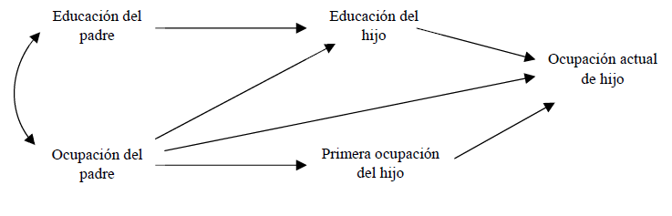

Capítulo 7 La clase como variable dependiente
Este capítulo tiene como propósito presentar una de las posibles aproximaciones al estudio de la estructura de clases en tanto variable dependiente. Dentro de este tipo de abordajes nos preguntamos acerca de aquellos factores que explican, condicionan o intervienen en el proceso de formación y acción de las clases sociales. En este caso nos centraremos en el estudio de la movilidad social, en tanto proceso que permite comprender el modo en que la estructura de clases se configura en el tiempo.
Para ello exploraremos algunas enfoques teóricos que han intentado explicar distintos aspectos de la movilidad social. Posteriormente nos centraremos en el análisis absoluto de la movilidad social a partir de tablas de contingencia y, luego, revisaremos brevemente algunas potencialidades del análisis multivariable del fenómeno. Para ello exploraremos algunas enfoques teóricos que han intentado explicar distintos aspectos de la movilidad social. Posteriormente nos centraremos en el análisis absoluto de la movilidad social a partir de tablas de contingencia y, luego, revisaremos algunas potencialidades del análisis multivariable del fenómeno.
Estas serán algunas de las preguntas que guiarán este capítulo:
- ¿Cuáles son las principales perspectivas teóricas que han estudiado el problema de la movilidad social? ¿En qué aspectos se centran para el estudio de la misma?
- ¿Qué dimensiones pueden estudiarse para comprender la movilidad social? ¿Qué rol juega la educación en dicho proceso?
- ¿Qué tendencias pueden observarse desde una tabla de movilidad social? ¿Que implica la movilidad ascendente, descendente y la reproducción?
- ¿Qué potencialidades ofrece el análisis multivariable de la movilidad social? ¿Qué técnicas pueden utilizarse?
Al completar este capítulo se espera que los lectores puedan:
- Conocer los principales enfoque teóricos desde donde se ha estudiado la movilidad social (estructural-funcionalismo y enfoque de clases).
- Presentar el estudio de la movilidad a través del análisis de tablas de contingencia.
- Introducir el enfoque multivariable en el estudio de la movilidad social utilizando como técnica a la regresión logística.
Para una mayor comprensión del capítulo recomendamos la lectura de los siguientes textos:
Kerbo, H. R. (2003). Estratificación social y desigualdad: El conflicto de clases en perspectiva histórica y comparada. Madrid: McGraw-Hill Interamericana de España. (Capítulo 6)
Dalle, P., Jorrat, J. R., y Riveiro, M. (2018). Movilidad social intergeneracional. En A. Salvia y J. I. Piovani (Eds.), La Argentina en el siglo XXI. Cómo somos, vivimos y convivimos en una sociedad desigual. Encuesta Nacional sobre la Estructura Social. Buenos Aires: Siglo Veintiuno Editores.
Solís, P., y Boado, M. (2016). Y sin embargo se mueve. Estratificación y movilidad intergeneracional de clase en América Latina. México: Centro de Estudios Espinosa Yglesias. (Capítulo 1)
Pla, J., y Rodríguez de la Fuente, J. J. (2016). Tendencias de movilidad social en la Argentina de las dos últimas décadas: 1995-2010. Papers. Revista de Sociologia, 101(4), 473-502.
Dalle, P. (2016). Movilidad social desde las clases populares: Un estudio sociológico en el Área Metropolitana de Buenos Aires 1960-2013. Buenos Aires: IIGG-CLACSO. (Capítulo 6 - ejemplo del uso de regresión logística)
7.1 El estudio de la movilidad social
Como señala Carabaña (1997) en el estudio de las clases sociales existen dos grandes abordajes posibles: considerar a la clase como una variable independiente o como una variable dependiente. El primero de estos abordajes fue retomado en el Capítulo 7, denominado por el autor como análisis de clase, nos permite comprender cómo los comportamientos sociales pueden ser explicados desde el posicionamiento de clase. Por el contrario, el segundo enfoque, denominado por Carabaña como teoría de clases, hace referencia a las explicaciones sobre el surgimiento, la reproducción y la transformación de las clases sociales.
Si bien el mismo no aclara si los estudios de movilidad social se engloban dentro de este segundo abordaje, podemos así considerarlo, ya que nos permite el análisis de las transformaciones y reproducciones dentro del sistema de estratificación. El estudio de la movilidad social nos ayuda a comprender cuánto cambio la estructura de clases respecto a la de generaciones pasadas, así como qué rasgos de la estructura actual se mantienen tal como existían en el pasado.
Vale señalar que el estudio de la clase social como variable dependiente no se acota al análisis de la movilidad social, sino que otros factores pueden ser considerados como explicativos de la misma, tales como la dinámica demográfica, los cambios tecnológicos, las políticas económicas, etc.
7.1.1 ¿Qué es la movilidad social?
El estudio de la movilidad social adquiere sentido dentro del campo teórico de la estratificación social (Cortés & Solís, 2006), ya que el primer paso es tener noción sobre cómo la sociedad se estructura en grupos o clases. Siguiendo la clásica definición de Lipset y Bendix (1963, p. 18), podemos entender a la movilidad social como el “proceso por el cual los individuos pasan de una posición a otra en la sociedad”. Al referirnos a posición, la literatura admite varias nociones: clases sociales, ocupaciones, niveles de ingresos, niveles de riqueza, niveles de condiciones de vida, niveles educativos, etc. Asimismo, la movilidad puede medirse en términos intergeneracionales (cambios en la posición de los hijos respecto de los padres) o intrageneracionales (cambios en la trayectoria de clase en la vida de la persona). En esta unidad nos centraremos en la movilidad intergeneracional de clase.
En forma simplificada, los estudios clásicos de movilidad social planteaban el abordaje de tres instituciones centrales en la vida de las personas: la familia, la educación y el mercado de trabajo. Esto derivó en lo que se denominó como “triángulo de la movilidad”.
Gráfico 7.1: Triángulo de la movilidad

Generalmente las investigaciones realizadas en este campo han hecho foco en algunas de las relaciones planteadas en dicho triángulo. La mayor parte de los estudios de movilidad se han centrado en la influencia del origen de clase sobre el destino de clase, considerando a la educación con un aspecto a controlar e influyente. Mientras menor sea la influencia del origen de clase sobre el destino y sobre el logro educativo, y mayor el impacto del nivel educativo alcanzado sobre el destino de clase, se estará en mayores condiciones de plantear una situación de igualdad de oportunidades para los individuos. Por el contrario, un mayor peso de las condiciones de origen sobre el logro educativo y el destino de clase señala una mayor reproducción en las desigualdades de condiciones y una menor igualdad de oportunidades. Mientras que los teóricos estructural funcionalistas hicieron más foco en la primera de estas situaciones, los enfoques críticos desde la teoría de clases hicieron hincapié sobre el segundo aspecto.
Sin embargo los estudios de movilidad social no se han centrado únicamente en el análisis de la influencia del origen social y el logro educativo sobre el destino de clase, sino que también se han incorporado otras dimensiones intervinientes: género, edad, etnia, país de nacimiento, entre otros.
7.1.2 Enfoques funcionalistas
La sociología de la movilidad social nace al calor del debate sobre la igualdad y en el seno del estructural-funcionalismo. Sus bases conceptuales se sustentan en la concepción liberal del orden social. Acorde con la teoría de la estratificación, la visión liberal-funcionalista comprendía a la sociedad como un campo continuo y homogéneo formado por individuos que desempeñan funciones de más o menos prestigio y remuneración, y que presentan amplias posibilidades de movilidad (Cachón Rodríguez, 1989; Kerbo, 2003).
Los primeros estudios de movilidad llevados a cabo por encuestas tuvieron lugar en el período de la segunda posguerra y sus preocupaciones giraban en torno a los niveles de movilidad que presentaban los distintos países y sobre la forma que la misma asumía. La tabla de movilidad —como se ilustra tabla siguiente—, para esta generación, constituye el insumo central para el estudio del fenómeno, conteniendo la misma la información sobre la posición social de las personas a las cuales se encuestó y la posición de su familia (generalmente del padre) cuando éstas tenían alrededor de 15 años (Breen, 2004, p. 3):
Gráfico 7.2: Ejemplo de tabla de movilidad (Dalle, 2016, p. 106)
![Ejemplo de tabla de movilidad [@Dalle2016, pp. 106]](imagenes/tabla_movilidad.png)
Posteriormente, una segunda oleada de estudios de movilidad social, iniciada con la obra The American Occupational Structure (Blau & Duncan, 1967), marcaron un nuevo rumbo teórico y metodológico en el campo. En primer lugar, Blau y Duncan plantearon un abordaje del fenómeno de la movilidad social considerándolo como parte del “proceso de estratificación”. De este modo descompusieron el concepto en sus elementos constituyentes, es decir, en la posición de origen y de destino. Ya no enfocaron el problema desde el estudio de los patrones de movilidad, sino a partir de los efectos que las características adscriptivas presentaban sobre el logro ocupacional. En términos operativos, la preocupación rondaba en torno a cómo diversos factores intervinientes (principalmente, la educación) y las contingencias de la carrera ocupacional podían modificar la influencia de los orígenes sociales sobre los logros ocupacionales de los sujetos.
Gráfico 7.3: Modelo básico de logro de estatus (Blau & Duncan, 1967, p. 170)
El trabajo de Blau y Duncan resaltaba tres aspectos:
La utilización como criterio clasificatorio de un índice socio-económico (SEI)12. Esta elección tenía dos fundamentos. En primer lugar, los autores asumían que la estructura ocupacional se configuraba de una manera más o menos continua, más que en clases discretas y separadas. En segundo lugar, el carácter gradacional era apropiado para la aplicación de determinadas técnicas estadísticas (correlaciones y regresiones) que el modelo analítico requería.
La utilización de la técnica del path analysis (variante de la regresión lineal múltiple) para conocer los efectos directos e indirectos que ejercen cada una de las variables.
Las conclusiones sobre la preminencia de los procesos de movilidad social en la sociedad estadounidense. The American Occupational Structure sentó una serie de conclusiones que demostraban que Estados Unidos era un país en el que el mérito era el principal motor de ascenso social. El nivel educativo de los encuestados era considerado como la principal variable explicativa, por sobre las características de origen (Blau & Duncan, 1967, pp. 155, 169–170).
7.1.3 Enfoques de clase
A partir de los años ’70, con el rompimiento del consenso ortodoxo estructural funcionalista, se abre una puerta al pluralismo sociológico en el campo de la movilidad social, a partir de la convivencia de diversas escuelas y tradiciones. Estos enfoques hicieron mayor énfasis en las desigualdades de origen y en la comprensión del fenómeno de la movilidad como un aspecto del proceso de formación y acción de las clases. Desde esta perspectiva general, las chances de movilidad social estarían fuertemente determinadas por las condiciones de origen (Kerbo, 2003, p. 156). Asimismo, muchos autores además de situar este abordaje en continuidad con la tradición weberiana, acuerdan que también en los escritos de Marx podría encontrarse cierta preocupación por el fenómeno de la estructura de la movilidad y las desigualdades de origen (Kerbo, 2003, p. 155).
La mirada de John Goldthorpe fue una de las más relevantes dentro de este enfoque. Para este autor, la movilidad social es un fenómeno que ocurre en la estructura de clases, es decir, dentro de las relaciones laborales, y no en un continuo de prestigio, estatus o recursos socioeconómicos. Desde el campo técnico también se avanzó a pasos agigantados, al comenzarse a utilizar los modelos loglineales. Esta técnica permitió el tratamiento estadístico para evaluar la asociación entre los orígenes y los destinos, a partir de variables discretas, es decir, habilitando la posibilidad de utilizar clasificaciones basadas en esquemas de clases sociales. Este tipo de análisis habilitaba el abordaje multidimensional, acercándose de este modo a las características que proponía el path analysis, incorporándose al análisis las variables de educación, cohorte, género y/o país.
Uno de los grandes aportes a los que Goldthorpe y su equipo arribó, a través del Proyecto Comparative Study of Social Mobility in Industrial Nations (CASMIN) que recopiló una serie de encuestas sobre movilidad social de los países con mayores niveles de industrialización de Europa (sumando a Japón y Estados Unidos) de alrededor de la década del ’70, fue que la condición de clase de origen, a diferencia de lo postulado en los abordajes funcionalistas, aún continúa teniendo efectos sobre el destino de las personas, y que esto debe ser explicado a partir de las ventajas y desventajas que se asocian a cada posición de clase (Erikson & Goldthorpe, 2002).
7.2 El uso de la base ENES-PISAC
Librerías que utilizaremos en esta sección:
Como hemos señalado en el Capítulo 2, una de las bases de datos públicas y nacionales para el estudio de la movilidad social es la Encuesta Nacional sobre la Estructura Social (ENES) desarrollada por el Programa de Investigación sobre la Sociedad Argentina Contemporánea(PISAC). La misma puede ser descargada, junto a los manuales de códigos, siguiendo este link.
Descargaremos las bases de individuos y hogares en formato SPSS.
7.2.1 Algunas consideraciones de la ENES
Antes de comenzar a trabajar con la ENES, señalaremos una serie de cuestiones previas a tener en consideración:
La encuesta cuenta con información socio-ocupacional para todos los miembros de 10 años y más. A su vez, para el análisis de la movilidad social intergeneracional, cuenta con información sociolaboral sobre el/la Principal Sostén del Hogar (PSH) cuando el/la PSH y/o cónyuge del hogar entrevistado tenían 15 años de edad. En otras palabras, podemos observar los patrones de movilidad tanto del/la PSH y cónyuge del hogar.
La encuesta ya provee a los usuarios esquemas de clase social construidos (CSO de Torrado y EGP), en formato desagregado, tanto para los miembros del hogar mayores de 10 años ocupados y desocupados, como para el PSH de origen.
Al igual que con la EPH, necesitaremos pegar la información de la base de hogar en la base de individuos, ya que los datos de movilidad social se encuentra en la primera base.
7.2.2 Abriendo y pegando la base ENES
Para abrir los archivos .sav nuevamente deberemos llamar al paquete haven que hemos instalado en el Capítulo 3 y utilizaremos la función read_sav.
enes_ind <- read_sav("bases/ENES_Personas_version_final.sav")
enes_hog <- read_sav("bases/ENES_Hogares_version_final.sav")Obtenidos ambos datasets ahora vamos a pegar la base de hogares a la de individuos, utilizando como variables identificadoras a nocues (Código Identificador de Vivienda) y nhog (Código Identificador del Hogar).
7.2.3 Recodificación de variables y filtros
Para el análisis de la movilidad social que realizaremos en las dos secciones posteriores necesitaremos recodificar una serie de variables para su correcto tratamiento. Empecemos por la principal, la clase social del/la encuestado/o. En este caso nos basaremos en el esquema EGP, que se encuentra codificado en la variable egp11 —Tabla 7.1—. Al tenerlo en su versión desagregada de 11 clases, necesitaremos reagruparlo de tal forma que queden 5 clases. A continuación mostramos nuestra propuesta de agrupación y las líneas de comando necesarias para hacerlo:
Código |
Esquema 11 clases |
Esquema 5 clases |
1 |
I. Clase de servicios, alta |
Clase de servicios |
2 |
II. Clase de servicios, baja |
|
3 |
IIIa. Trabajadores no manuales de rutina, alta |
Trabajadores rutinarios |
4 |
IIIb. Trabajadores no manuales de servicios y comercio, baja |
|
5 |
IVa. Autónomos con empleados |
Pequeña Burguesía |
6 |
IVb. Autónomos sin empleados |
|
7 |
V. Supervisores de trabajadores manuales |
Clase trabajadora calificada |
8 |
VI. Trabajadores manuales calificados |
|
9 |
VIIa. Trabajadores manuales no calificados |
Clase trabajadora no calificada |
10 |
VIIb. Trabajadores agropecuarios |
|
11 |
IVc. Autónomos agropecuarios |
Pequeña Burguesía |
Fuente: elaboración propia en base Erikson y Goldthorpe (1992) | ||
enes <- enes %>%
mutate(egp5 = car::recode(egp11, "1:2=1; 3:4=2; 5:6=3; 7:8=4; 9:10=5; 11=3"),
egp5_f = factor(egp5, labels = c("CS", "TR", "PB", "CTC", "CTNC")))Como bien puede apreciarse, también construimos una variable factor (egp5_f) ya que posteriormente la necesitaremos al realizar un análisis multivariable. Al estar estudiando movilidad intergeneracional también precisaremos tener clasificados en un esquema de clases al PSH del hogar cuando les encuestades tenían 15 años. En este caso recodificaremos la variable de clase únicamente del PSH encuestado (egp11a) ya que trabajaremos únicamente con esa población para no complicar el análisis.
enes <- enes %>%
mutate(egp5a = car::recode(egp11a, "1:2=1; 3:4=2; 5:6=3; 7:8=4; 9:10=5; 11=3"),
egp5a_f = factor(egp5a, labels = c("CS", "TR", "PB", "CTC", "CTNC")))Sumada a estas variables, también recodificaremos el nivel educativo de los encuestados y del hogar de origen y crearemos una variable factor para el género. Puntualmente el nivel educativo quedará codificado en las siguientes categorías: 1. Hasta secundario incompleto; 2. Secundario completo - superior incompleto; 3. Superior completo.
Para establecer el nivel educativo del hogar de origen, seleccionaremos la posición educativa más alta entre el PSH y cónyuge de ese hogar, ya que tenemos dichos datos. Esto es lo que comúnmente se denomina clima educativo. Primero deberemos construir la variable de nivel educativo para cada miembro del hogar de origen (PSH y cónyuge), a través de las variables v240a (máximo nivel educativo del PSH), v241a (finalidad del nivel educativo del PSH), v244a (máximo nivel educativo del cónyuge), v245a (finalidad del nivel educativo del cónyuge). Luego buscaremos el valor máximo de las dos variables para cada registro, generando un nivel educativo para cada hogar de origen. Para ello usaremos la función pmax de R base.
Es recomendable revisar el libro de códigos de la encuesta para poder ver como se clasifican las variables, principalmente aquellas ligadas a la educación.
enes <- enes %>%
mutate(educ = car::recode(nivel_ed, "0:4=1; c(5,6,8)=2; c(7,9)=3; else=NA"),
educ_f = factor(educ, labels = c("Hasta sec. incompleto", "Sec. completo",
"Superior completo")))
enes <- enes %>%
mutate(educ_psh = case_when(v240a <= 2 ~ 1, (v240a == 3 | v240a == 4) & v241a ==
2 ~ 1, (v240a == 3 | v240a == 4) & v241a == 1 ~ 2, (v240a == 5 | v240a ==
6) & v241a == 2 ~ 2, (v240a == 5 | v240a == 6) & v241a == 1 ~ 3, v240a ==
7 ~ 3), educ_con = case_when(v244a <= 2 ~ 1, (v244a == 3 | v244a == 4) &
v245a == 2 ~ 1, (v244a == 3 | v244a == 4) & v245a == 1 ~ 2, (v244a == 5 |
v244a == 6) & v245a == 2 ~ 2, (v244a == 5 | v244a == 6) & v245a == 1 ~ 3,
v244a == 7 ~ 3), educ_hog = pmax(educ_psh, educ_con, na.rm = TRUE), educ_hog_f = factor(educ_hog,
labels = c("Hasta sec. incompleto", "Sec. completo", "Superior completo")))
enes <- enes %>%
mutate(sexo = car::recode(v109, "1=1; 2=2; else=NA"), sexo_f = factor(sexo, labels = c("Varon",
"Mujer")))Por último generaremos un nuevo dataset que sólo contenga la información del PSH encuestado, ya que es para este miembro que tenemos la información acerca de su origen social. Para ello, aplicaremos el filtro a partir de la variable v111 que nos permite conocer el parentesco de los miembros del hogar. También seleccionaremos a la población mayor a 30 años, ya que en los estudios de movilidad se suele priorizar para el análisis a las poblaciones que ya se encuentran con cierta madurez ocupacional.
Podemos observar los 15 primeros casos de la base para observar el clima educativo se ha construido de manera correcta, calculando el máximo entre el nivel educativo de los padres (PSH y cónyuge) de los encuestades.
# A tibble: 15 × 3
educ_psh educ_con educ_hog
<dbl> <dbl> <dbl>
1 1 1 1
2 1 1 1
3 1 NA 1
4 2 1 2
5 1 1 1
6 1 1 1
7 1 1 1
8 2 2 2
9 1 3 3
10 3 NA 3
11 1 1 1
12 1 2 2
13 1 2 2
14 1 1 1
15 3 3 37.3 Las tablas de movilidad
El análisis de la movilidad a partir de tablas de contingencia es una de las formas más simples, pero no por eso menos importante, de estudiar los procesos de cambio entre dos generaciones. La tabla de movilidad no es más que un caso especial de tabla de contingencia en donde (Cachón Rodríguez, 1989, p. 243):
- La población es cerrada, ya que no hay en destino individuos que no tuvieran su origen y todos los orígenes tienen a su vez sus destinos;
- El número de categorías en origen y destino es el mismo;
- Las categorías son las mismas en origen y destino, y
- Están ordenadas de la misma manera.
Por convención la variable de origen social se suele poner en las filas y la de destino social (clase del encuestado) en las columnas. La base ENES también cuenta con un factor de calibración (ponderador) que debe utilizarse y que se encuentra en la variable f_calib3. A continuación presentamos la tabla de movilidad para las variables que hemos preparado en la sección anterior.
summarytools::ctable(enes_movilidad$egp5a_f, enes_movilidad$egp5_f, weights = enes_movilidad$f_calib3.x,
prop = "n", useNA = "no")Cross-Tabulation
egp5a_f * egp5_f
Data Frame: enes_movilidad
| egp5_f | CS | TR | PB | CTC | CTNC | Total | |
| egp5a_f | |||||||
| CS | 744807 | 126972 | 186148 | 118558 | 113067 | 1289552 | |
| TR | 184008 | 111470 | 105476 | 45828 | 115481 | 562263 | |
| PB | 735952 | 300851 | 760637 | 251341 | 605470 | 2654251 | |
| CTC | 308108 | 155335 | 282531 | 196952 | 337061 | 1279987 | |
| CTNC | 397512 | 408370 | 659705 | 341606 | 1185543 | 2992736 | |
| Total | 2370387 | 1102998 | 1994497 | 954285 | 2356622 | 8778789 |
Sin embargo, la tabla con las frecuencias absolutas poca información nos brinda acerca de cómo el origen de clase condiciona al destino de clase. Para ello se calculan los porcentajes de salida (outflow), calculados por fila, y de entrada (inflow), calculados por columna. Mientras que los porcentajes de salida permiten dar cuenta de los destinos de los sujetos en función de sus orígenes, los porcentajes de entrada permiten observar la composición, en función del origen, para cada uno de los destinos de clase. Para ello modificaremos el parámetro prop de la función ctable: ‘r’ para los porcentajes por fila y ‘c’ para los porcentajes por columna.
summarytools::ctable(enes_movilidad$egp5a_f, enes_movilidad$egp5_f, weights = enes_movilidad$f_calib3.x,
prop = "r", useNA = "no", round.digits = 1, totals = FALSE)Cross-Tabulation, Row Proportions
egp5a_f * egp5_f
Data Frame: enes_movilidad
| egp5_f | CS | TR | PB | CTC | CTNC | |
| egp5a_f | ||||||
| CS | 744807.0 (57.8%) | 126972.0 ( 9.8%) | 186148.0 (14.4%) | 118558.0 ( 9.2%) | 113067.0 ( 8.8%) | |
| TR | 184008.0 (32.7%) | 111470.0 (19.8%) | 105476.0 (18.8%) | 45828.0 ( 8.2%) | 115481.0 (20.5%) | |
| PB | 735952.0 (27.7%) | 300851.0 (11.3%) | 760637.0 (28.7%) | 251341.0 ( 9.5%) | 605470.0 (22.8%) | |
| CTC | 308108.0 (24.1%) | 155335.0 (12.1%) | 282531.0 (22.1%) | 196952.0 (15.4%) | 337061.0 (26.3%) | |
| CTNC | 397512.0 (13.3%) | 408370.0 (13.6%) | 659705.0 (22.0%) | 341606.0 (11.4%) | 1185543.0 (39.6%) |
summarytools::ctable(enes_movilidad$egp5a_f, enes_movilidad$egp5_f, weights = enes_movilidad$f_calib3.x,
prop = "c", useNA = "no", round.digits = 1, totals = FALSE)Cross-Tabulation, Column Proportions
egp5a_f * egp5_f
Data Frame: enes_movilidad
| egp5_f | CS | TR | PB | CTC | CTNC | |
| egp5a_f | ||||||
| CS | 744807.0 (31.4%) | 126972.0 (11.5%) | 186148.0 ( 9.3%) | 118558.0 (12.4%) | 113067.0 ( 4.8%) | |
| TR | 184008.0 ( 7.8%) | 111470.0 (10.1%) | 105476.0 ( 5.3%) | 45828.0 ( 4.8%) | 115481.0 ( 4.9%) | |
| PB | 735952.0 (31.0%) | 300851.0 (27.3%) | 760637.0 (38.1%) | 251341.0 (26.3%) | 605470.0 (25.7%) | |
| CTC | 308108.0 (13.0%) | 155335.0 (14.1%) | 282531.0 (14.2%) | 196952.0 (20.6%) | 337061.0 (14.3%) | |
| CTNC | 397512.0 (16.8%) | 408370.0 (37.0%) | 659705.0 (33.1%) | 341606.0 (35.8%) | 1185543.0 (50.3%) |
Los porcentajes de salida (primera tabla) nos permiten dar cuenta del nivel de herencia por origen de clase. Generalmente los valores suelen acumularse en la diagonal descendente (situaciones de reproducción de clase) y en los extremos. Por ejemplo, un 58% de los hijos que provienen de la clase de servicios reproducen dicha clase, mientras que un 40% de los que provienen de la clase de trabajadores no calificados heredan dicha posición. Otra cuestión que puede observarse en dicha tabla es que el porcentaje de acceso a la clase superior desciende escalonadamente por origen de clase: mientras que un 33% de individuos con origen en la clase de trabajadores rutinarios accede a la clase de servicios (primera columna), sólo un 13% lo hace desde la clase de trabajadores no calificados.
La tabla de porcentaje de entrada nos indica cómo se conforma la estructura de clases relevada al momento de la encuesta según el origen de clase. En este sentido, mientras que la clase de servicios “recluta” a sus miembros principalmente de la misma clase (31%) y de la pequeña burguesía (31%), la clase de trabajadores rutinarios presenta una composición más heterogénea. Por su parte, tanto la clase trabajadora calificada como la no calificada están compuesta por individuos fundamentalmente provenientes de la misma clase social.
Finalmente, en los estudios de movilidad se calculan algunos índices que resumen información valiosa. Para ello se utilizan las frecuencias calculadas en la primer tabla, es decir, la de frecuencias absolutas. En este caso presentaremos 4 de ellos:
- Índice de reproducción
- Índice de movilidad
- Índice de movilidad ascendente
- Índice de movilidad descendente
El índice de reproducción se calcula como el cociente entre la sumatoria de todos los casos que se ubican en la diagonal principal descendente y el total de casos. Si lo multiplicamos por 100 obtendremos el porcentaje de casos que mantiene su posición de origen, es decir, que no cambia respecto a sus padres:
((744807 + 111470 + 760637 + 196952 + 1185543)/8778789) * 100[1] 34Lógicamente, si al total le restamos el índice de reproducción, obtenemos el índice de movilidad:
100 - 34.16655[1] 66Entonces mientras que un 34% mantiene su posición respecto a sus padres, un 66% ha logrado moverse en términos intergeneracionales.
Por último, para saber si esos movimientos son ascendentes o descendentes, calcularemos los otros dos índices. El primero de ellos se calcula como el cociente entre la sumatoria de todos los casos que efectivamente han ascendido intergeneracionalmente, es decir, aquellos que se ubican por debajo de la diagonal principal, y el total de casos. En contraposición, el índice de movilidad descendente se calcula como el cociente entre la sumatoria de todos los casos que han descendido intergeneracionalmente (aquellos que se ubican por encima de la diagonal principal) y el total de casos.
((184008 + 735952 + 308108 + 397512 + 300851 + 155335 + 408370 + 282531 + 659705 +
341606)/8778789) * 100[1] 43
((126972 + 186148 + 105476 + 118558 + 45828 + 251341 + 113067 + 115481 + 605470 +
337061)/8778789) * 100[1] 23Mientras que un 43% de los casos totales ha experimentado movilidad social ascendente, un 23% ha descendido de posición respecto a sus padres. Ambos porcentajes sumados obtienen el 66% de la movilidad total.
7.4 Aproximación al análisis multivariable de la movilidad social
En esta sección utilizaremos las siguientes librerías:
Cómo hemos señalado en el Capítulo 7 cuando nos referíamos a la clase como variable independiente, también es posible realizar un análisis multidimensional sobre las oportunidades de movilidad social. En dicho caso, la variable dependiente es asumida por la posición de clase del encuestado, mientras que como factores independientes podemos considerar, además de la posición de clase del origen, otras dimensiones comúnmente estudiadas: el nivel educativos de los padres, el nivel educativo de los encuestados, el género, la edad, el lugar de nacimiento, entre otros.
Sin adentrarnos específicamente en la cuestión técnica, les investigadores que analizan estas cuestiones comúnmente utilizan la regresión logística binomial, la regresión logística multinomial o la regresión logística ordinal para responder a los interrogantes. Al igual que en la técnica de regresión que vimos anteriormente, la regresión logística nos permite identificar el peso o la influencia que determinados factores independientes tienen sobre una variable dependiente. En este caso, al disponer de una variable dependiente de tipo categorial (clase del encuestado) no puede usarse la técnica de regresión lineal, debiendo optarse por utilizar la transformación logística.
De este modo, es común que a través de la técnica se evalúe cuánto pesa el origen de clase y educativo en las chances de moverse en la estructura, así como aspectos de tipo adscriptivos, tales como el sexo o la edad, y otros adquiridos como el nivel educativo.
En nuestro caso, y para simplificar el análisis, vamos a ensayar la técnica de regresión logística binomial, adecuada para cuando nuestra variable dependiente es de tipo dicotómica, es decir, que sólo tiene dos categorías de respuesta. Para ello vamos a recodificar nuevamente nuestra variable de clase social del encuestado en dos categorías:
1. Aquellos pertenecientes a la clase de servicio
0. Aquellos pertenecientes a otras clases
Es decir, nosotros vamos a evaluar las probabilidades de acceder a la clase de servicio en lugar de a otra clase en función de diversos factores independientes condicionantes. Por eso, en primer lugar, recodificaremos la variable:
enes_movilidad <- enes_movilidad %>%
mutate(egp2 = car::recode(egp5, "1=1; 2:5=0"), egp2_f = factor(egp2, labels = c("Clase de servicio",
"Otra clase")))Una vez realizada la recodificación, podemos construir la regresión logística tomando como factores independientes, en primer lugar, a los aspectos propiamente del origen social: la clase y la educación de los padres. Para ello recurriremos a la función glm (generalized linear model), que tiene un formato similar a la función lm, y debemos señalar la opción binomial en family. En este caso, para simplificar el proceso, no incorporaremos el ponderador, a través de la opción weights, ya que su aplicación no permite una correcto ajuste en la regresión 13.
Para observar los resultados utilizaremos la función summ (o export_summs si necesitamos exportar a Word o PDF) del paquete jtools que deberán instalar.
| Observations | 5907 (1553 missing obs. deleted) |
| Dependent variable | egp2 |
| Type | Generalized linear model |
| Family | binomial |
| Link | logit |
| 𝛘²(6) | 668.93 |
| Pseudo-R² (Cragg-Uhler) | 0.16 |
| Pseudo-R² (McFadden) | 0.10 |
| AIC | 6175.46 |
| BIC | 6222.24 |
| Est. | S.E. | z val. | p | |
|---|---|---|---|---|
| (Intercept) | -0.55 | 0.09 | -6.08 | 0.00 |
| educ_hog_fSec. completo | 0.77 | 0.08 | 9.46 | 0.00 |
| educ_hog_fSuperior completo | 1.22 | 0.11 | 11.20 | 0.00 |
| egp5a_fTR | -0.61 | 0.14 | -4.40 | 0.00 |
| egp5a_fPB | -0.66 | 0.10 | -6.68 | 0.00 |
| egp5a_fCTC | -0.71 | 0.11 | -6.19 | 0.00 |
| egp5a_fCTNC | -1.38 | 0.11 | -12.88 | 0.00 |
| Standard errors: MLE |
logit1 <- glm(egp2 ~ educ_hog_f + egp5a_f, data = enes_movilidad, family = "binomial")
export_summs(logit1)Esta primera información que nos brinda la función summ(logit1) nos permite decir tres cosas. En primer lugar, sabemos por la última columna que todos los coeficientes estimados son significativos estadísticamente (los p-value son menores a 0,05). En segundo lugar, en el caso del nivel educativo de origen, hay una ventaja de aquellos que provienen de niveles educativos superiores respecto a los inferiores (las estimaciones se incrementan a medida que ascendemos en la escala educativa). Siempre nuestra categoría de referencia será aquella que no está señalada en el cuadro, en este caso, el nivel educativo más bajo. Entonces, valores superiores a 0 nos dirán que las oportunidades de acceder a la clase de servicio mejoran al aumentar el nivel educativo de origen. Algo similar sucede con la clase social de origen, donde la categoría de contraste es justamente la clase de servicio. A medida que descendemos en la escala de clases, las oportunidades de moverse intergeneracionalmente a la clase de servicio disminuyen, aumentan en términos negativos.
En tercer lugar, los resultados de la sección model fit nos señalan distintas medidas de bondad de ajuste. En nuestro caso, observaremos los Pseudo-R2 que nos permiten una aproximación a la cantidad de varianza explicada por el modelo. En este caso, el modelo planteado explica entre un 10% y un 16% de la varianza total de la variable dependiente. Cuanto más alto sea dicho valor, mejor ajuste tendrá el modelo y mejores predicciones realizaremos sobre la realidad que estamos midiendo.
A continuación, elaboraremos un segundo modelo que incorpore como variables predictoras al nivel educativo y al sexo de los encuestades. Lo llamaremos logit2. A su vez, siguiendo el modo en que muchos estudios muestran los coeficientes de la regresión, pediremos a través del comando opción exp = TRUE de la función summ, que nos brinde las estimaciones en forma exponenciada. Como veremos a continuación esto facilitará la lectura de los mismos al transformarlos en razones de momios (odds ratios).
logit2 <- glm(egp2 ~ educ_hog_f + egp5a_f + educ_f + sexo_f, data = enes_movilidad,
family = "binomial")
summ(logit2, exp = TRUE)| Observations | 5900 (1560 missing obs. deleted) |
| Dependent variable | egp2 |
| Type | Generalized linear model |
| Family | binomial |
| Link | logit |
| 𝛘²(9) | 1899.04 |
| Pseudo-R² (Cragg-Uhler) | 0.40 |
| Pseudo-R² (McFadden) | 0.28 |
| AIC | 4947.04 |
| BIC | 5013.87 |
| exp(Est.) | 2.5% | 97.5% | z val. | p | |
|---|---|---|---|---|---|
| (Intercept) | 0.13 | 0.11 | 0.17 | -16.01 | 0.00 |
| educ_hog_fSec. completo | 1.13 | 0.94 | 1.36 | 1.26 | 0.21 |
| educ_hog_fSuperior completo | 1.19 | 0.92 | 1.53 | 1.34 | 0.18 |
| egp5a_fTR | 0.63 | 0.46 | 0.86 | -2.95 | 0.00 |
| egp5a_fPB | 0.64 | 0.51 | 0.80 | -3.90 | 0.00 |
| egp5a_fCTC | 0.60 | 0.46 | 0.77 | -3.90 | 0.00 |
| egp5a_fCTNC | 0.42 | 0.33 | 0.54 | -7.02 | 0.00 |
| educ_fSec. completo | 4.31 | 3.61 | 5.16 | 15.96 | 0.00 |
| educ_fSuperior completo | 26.09 | 21.24 | 32.04 | 31.10 | 0.00 |
| sexo_fMujer | 1.17 | 1.01 | 1.36 | 2.15 | 0.03 |
| Standard errors: MLE |
logit2 <- glm(egp2 ~ educ_hog_f + egp5a_f + educ_f + sexo_f, data = enes_movilidad,
family = "binomial")
export_summs(logit2, exp = TRUE)Podemos observar que al incorporar las variables de nivel educativo y sexo la bondad de ajuste mejora considerablemente (principalmente por el nivel educativo), alcanzando valores de pseudo-R2 de entre 28% y 40%. Al mismo tiempo, los coeficientes de nivel educativo de origen ya no son significativos estadísticamente, es decir, que no tienen un impacto las probabilidades de acceso a la clase de servicio. Esto puede tener muchas explicaciones, pero siguiendo lo que vimos anteriormente en este capítulo, Blau y Duncan (1967) entendían que el menor peso del origen educativo en la movilidad social se debía a que el mismo se transfería no en forma directa, sino indirectamente a través del logro educativo de los hijos.
En este sentido, el nivel educativo alcanzado por los hijos es el “gran factor de explicación” del acceso a la clase de servicios. Que la categoría “superior completo” tenga un valor de 26,09 significa, en términos exponenciados, que los individuos con niveles educativos superiores a diferencia de los que tienen niveles bajos (hasta secundaria incompleta) tienen 26 veces más de oportunidades de acceder a la clase de servicio que al resto de la clases. En el caso de aquellos que tienen secundaria completa versus les que tienen niveles educativos bajos, las oportunidades son sólo 4 veces más altas.
En el caso del género, las mujeres presentan un 17% (1,17 veces) más de oportunidades que los varones de acceder a la clase de servicio.
Cómo regla de oro, las razones de momios (coeficientes exponenciados) pueden variar de 0 a infinito, siendo 1 la presencia de independencia estadística. Valores mayores a 1 implican una mayor oportunidad de que un suceso ocurra, mientras que valores menores a 1 implican menores oportunidades de que un suceso ocurra.
Finalmente si lo que se quiere es presentar la comparación entre los dos modelos (o varios), tal como se suelen mostrar en las revistas científicas, recomendamos la instalación del paquete huxtable. Utilizando el comando export_summs e indicando en las opciones nuestros modelos, mediante el código:
export_summs(logit1, logit2, scale = TRUE)| Model 1 | Model 2 | |
|---|---|---|
| (Intercept) | -0.55 *** | -2.00 *** |
| (0.09) | (0.13) | |
| educ_hog_fSec. completo | 0.77 *** | 0.12 |
| (0.08) | (0.10) | |
| educ_hog_fSuperior completo | 1.22 *** | 0.17 |
| (0.11) | (0.13) | |
| egp5a_fTR | -0.61 *** | -0.46 ** |
| (0.14) | (0.16) | |
| egp5a_fPB | -0.66 *** | -0.45 *** |
| (0.10) | (0.11) | |
| egp5a_fCTC | -0.71 *** | -0.51 *** |
| (0.11) | (0.13) | |
| egp5a_fCTNC | -1.38 *** | -0.86 *** |
| (0.11) | (0.12) | |
| educ_fSec. completo | 1.46 *** | |
| (0.09) | ||
| educ_fSuperior completo | 3.26 *** | |
| (0.10) | ||
| sexo_fMujer | 0.16 * | |
| (0.07) | ||
| N | 5907 | 5900 |
| AIC | 6175.46 | 4947.04 |
| BIC | 6222.24 | 5013.87 |
| Pseudo R2 | 0.16 | 0.40 |
| All continuous predictors are mean-centered and scaled by 1 standard deviation. The outcome variable is in its original units. *** p < 0.001; ** p < 0.01; * p < 0.05. | ||